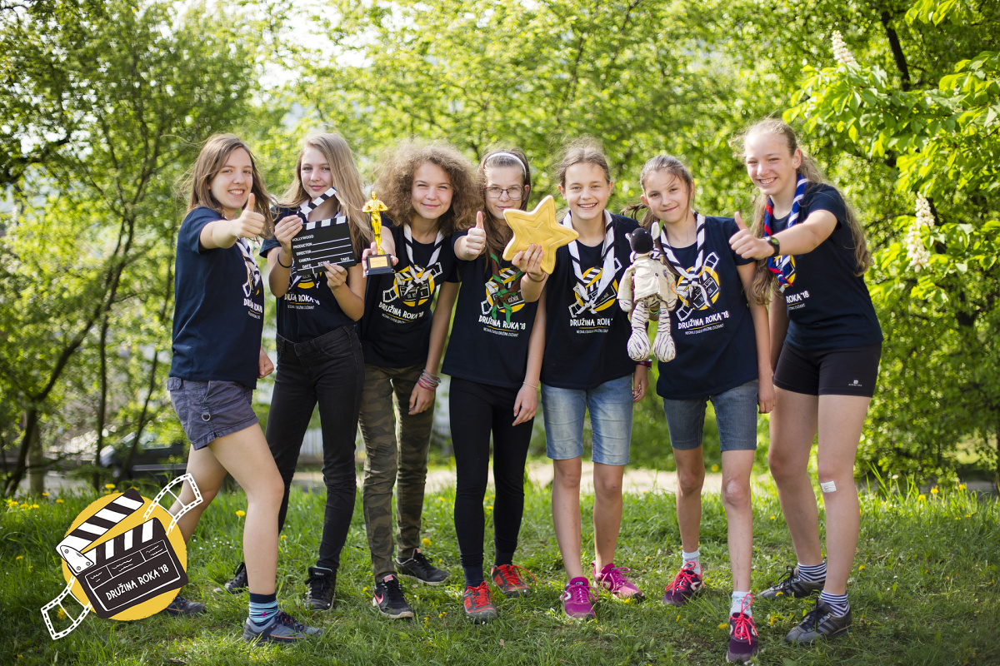

project website

Kto sme?
Ahojte, sme skautská družina zo 70. zboru Bizón Víťazí - Bratislava. Vznikli sme ako nová skautská družina už v roku 2013 a odvtedy sa u nás veľa zmenilo. Vystriedali sa u nás členky a aj radkyne. V tejto chvíli je nás v družine 9 a ešte Zebroš. To je náš plyšový maskot. Máme dve radkyne, Líšku a Aňu. Zažili sme spolu už veľa dobrodružstiev a ešte viac hádam zažijeme. A na tejto stránke sa s vami podelíme o tie najlepšie z nich. Prikladáme aj link na stránku nášho zboru 70.zborBV

DRUŽINA ROKA 2018
V roku 2018 sa nám podarilo vyhrať celoslovenskú skautskú súťaž - Družina roka. Ak chceš vedieť viac, klikni na obrázok.